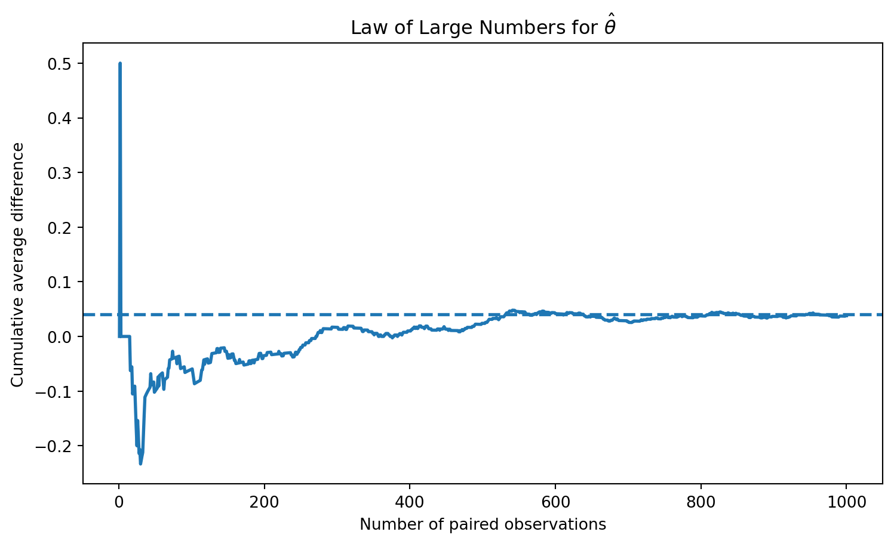
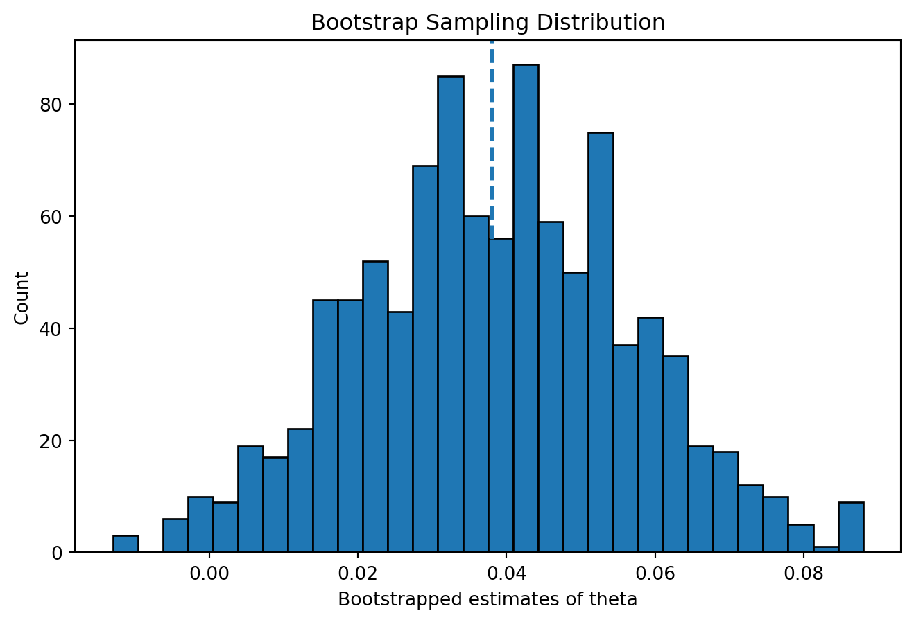
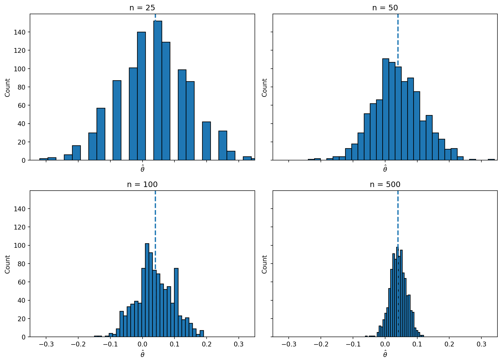

import numpy as np
import pandas as pd
import matplotlib.pyplot as plt
from scipy.stats import norm
import statsmodels.api as sm
np.random.seed(42)A/B Testing a Call to Action
Simulating Key Ideas from Classical Frequentist Statistics
Introduction
Suppose I run a website with a landing page that asks visitors to subscribe to a newsletter. I want to know which wording encourages more people to sign up. One option is CTA A: “Sign up for our newsletter here!” A second option is CTA B: “Stay up to date by signing up!” Even though these messages are similar, small changes in wording can affect behavior, so it makes sense to test them instead of guessing.
An A/B test is a simple experiment for comparing two versions of something. Visitors are randomly assigned to see either CTA A or CTA B, and then I compare the share of visitors in each group who subscribe. Random assignment is important because it helps make the two groups comparable. If one CTA produces a meaningfully higher sign-up rate, I have evidence that the wording itself is responsible for the difference.
The A/B Test as a Statistical Problem
From a statistical point of view, each visitor has a binary outcome: either they sign up or they do not. That makes it natural to model each observation as a Bernoulli random variable with success probability \(\pi\), where success means a newsletter sign-up.
Because the call to action might change behavior, we allow the success probability to differ across groups. Let \(\pi_A\) be the probability that a visitor signs up after seeing CTA A, and let \(\pi_B\) be the probability for CTA B. The quantity I care about is the treatment effect
\[ \theta = \pi_A - \pi_B, \]
which measures the difference in sign-up rates between the two versions.
In practice, I do not observe \(\pi_A\) and \(\pi_B\) directly, so I estimate them with sample proportions. Since each outcome is either 0 or 1, the sample mean is just the proportion of visitors who signed up. That means my estimator is
\[ \hat\theta = \bar{X}_A - \bar{X}_B = \hat\pi_A - \hat\pi_B. \]
If \(\hat\theta\) is positive, CTA A appears to perform better. If it is negative, CTA B appears to perform better.
Simulating Data
In a real experiment, I would not know the true values of \(\pi_A\) and \(\pi_B\). For this assignment, though, simulation is useful because it lets me choose the truth ahead of time and then see how well my statistical tools recover it. That way I can study the estimator’s behavior in a controlled setting.
Here I set \(\pi_A = 0.22\) and \(\pi_B = 0.18\), so the true treatment effect is
\[ \theta = 0.22 - 0.18 = 0.04. \]
I then simulate 1,000 visitors in each group.
n = 1000
pi_A = 0.22
pi_B = 0.18
true_theta = pi_A - pi_B
cta_A = np.random.binomial(1, pi_A, n)
cta_B = np.random.binomial(1, pi_B, n)
sim_summary = pd.DataFrame({
"Group": ["CTA A", "CTA B"],
"True probability": [pi_A, pi_B],
"Sample sign-up rate": [cta_A.mean(), cta_B.mean()],
"Sign-ups": [cta_A.sum(), cta_B.sum()],
"Sample size": [len(cta_A), len(cta_B)]
})
sim_summary.round(3)| Group | True probability | Sample sign-up rate | Sign-ups | Sample size | |
|---|---|---|---|---|---|
| 0 | CTA A | 0.22 | 0.216 | 216 | 1000 |
| 1 | CTA B | 0.18 | 0.178 | 178 | 1000 |
In this simulated dataset, the estimated difference in sample proportions is shown below.
theta_hat = cta_A.mean() - cta_B.mean()
pd.DataFrame({
"True theta": [true_theta],
"Estimated theta": [theta_hat]
}).round(3)| True theta | Estimated theta | |
|---|---|---|
| 0 | 0.04 | 0.038 |
The Law of Large Numbers
The Law of Large Numbers says that as the sample size grows, the sample mean gets closer to the population mean. In this setting that matters because my estimator is built from sample means. If I keep observing more visitors, the estimated difference in conversion rates should settle down near the true difference \(\theta = 0.04\).
To illustrate this, I compute the element-wise difference between the A and B outcomes and then take the cumulative average of those differences.
diff_vector = cta_A - cta_B
running_theta = np.cumsum(diff_vector) / np.arange(1, n + 1)
plt.figure(figsize=(9, 5))
plt.plot(np.arange(1, n + 1), running_theta, linewidth=2)
plt.axhline(true_theta, linestyle="--", linewidth=2)
plt.xlabel("Number of paired observations")
plt.ylabel("Cumulative average difference")
plt.title("Law of Large Numbers for $\\hat{\\theta}$")
plt.show()
At the beginning of the plot, the running estimate moves around quite a bit because each new observation has a large effect when the sample is small. As more observations accumulate, those swings become smaller and the estimate stabilizes. By the end of the sample, the running average is much closer to the true value of 0.04.
The main lesson is that larger samples produce more reliable estimates. The Law of Large Numbers does not say every sample estimate is perfect, but it does explain why averaging over many observations tends to recover the truth.
Bootstrap Standard Errors
Once I have a point estimate, the next question is how precise it is. A single estimate does not tell me how much sampling uncertainty remains. Bootstrapping helps answer that question by repeatedly resampling from the observed data and recalculating the statistic each time.
The bootstrap works like this: treat the observed sample as a stand-in for the population, sample with replacement from each group many times, recompute \(\hat\theta\) for each resample, and then look at how much those bootstrapped estimates vary. The standard deviation of the bootstrap estimates is the bootstrapped standard error.
rng = np.random.default_rng(42)
B = 1000
boot_thetas = np.empty(B)
for b in range(B):
boot_A = rng.choice(cta_A, size=n, replace=True)
boot_B = rng.choice(cta_B, size=n, replace=True)
boot_thetas[b] = boot_A.mean() - boot_B.mean()
boot_se = boot_thetas.std(ddof=1)
analytical_se = np.sqrt(
cta_A.mean() * (1 - cta_A.mean()) / n +
cta_B.mean() * (1 - cta_B.mean()) / n
)
ci_low = theta_hat - 1.96 * boot_se
ci_high = theta_hat + 1.96 * boot_se
bootstrap_results = pd.DataFrame({
"Quantity": ["Estimated theta", "Bootstrap SE", "Analytical SE", "95% CI lower", "95% CI upper"],
"Value": [theta_hat, boot_se, analytical_se, ci_low, ci_high]
})
bootstrap_results.round(4)| Quantity | Value | |
|---|---|---|
| 0 | Estimated theta | 0.0380 |
| 1 | Bootstrap SE | 0.0183 |
| 2 | Analytical SE | 0.0178 |
| 3 | 95% CI lower | 0.0021 |
| 4 | 95% CI upper | 0.0739 |
The bootstrap and analytical standard errors are very close, which is reassuring. In my simulation, the bootstrap standard error is about 0.0183 while the analytical standard error is about 0.0178. That small difference is exactly what I would expect: they are two different ways of estimating the same uncertainty, and with a reasonably large sample they should line up closely.
Using the bootstrap standard error, the 95% confidence interval for \(\theta\) is approximately \([0.002, 0.074]\). Interpreted in plain language, this interval says that values near zero are barely consistent with the data, but the most plausible effects are positive. In other words, the simulated data suggest CTA A performs a little better than CTA B, although the effect is not huge.
plt.figure(figsize=(8, 5))
plt.hist(boot_thetas, bins=30, edgecolor="black")
plt.axvline(theta_hat, linestyle="--", linewidth=2)
plt.xlabel("Bootstrapped estimates of theta")
plt.ylabel("Count")
plt.title("Bootstrap Sampling Distribution")
plt.show()
The Central Limit Theorem
The Central Limit Theorem says that even if the underlying data are not Normally distributed, the sampling distribution of the sample mean becomes approximately Normal when the sample size is large enough. Because my estimator is a difference in sample means, the same logic applies to \(\hat\theta\).
That is useful because the original data here are Bernoulli, which are definitely not Normal. Still, if I repeatedly draw samples and recompute \(\hat\theta\), the resulting distribution should look more and more bell-shaped as the sample size increases.
sample_sizes = [25, 50, 100, 500]
reps = 1000
results = {}
for sample_n in sample_sizes:
estimates = np.empty(reps)
for r in range(reps):
draw_A = np.random.binomial(1, pi_A, sample_n)
draw_B = np.random.binomial(1, pi_B, sample_n)
estimates[r] = draw_A.mean() - draw_B.mean()
results[sample_n] = estimates
fig, axes = plt.subplots(2, 2, figsize=(11, 8), sharex=True, sharey=True)
axes = axes.flatten()
x_min, x_max = -0.35, 0.35
for ax, sample_n in zip(axes, sample_sizes):
ax.hist(results[sample_n], bins=30, edgecolor="black")
ax.axvline(true_theta, linestyle="--", linewidth=2)
ax.set_title(f"n = {sample_n}")
ax.set_xlim(x_min, x_max)
ax.set_xlabel(r"$\hat{\theta}$")
ax.set_ylabel("Count")
plt.tight_layout()
plt.show()
These histograms show the CLT in action. For small samples like \(n=25\), the distribution of \(\hat\theta\) is rough and somewhat irregular. As the sample size grows to 50, 100, and especially 500, the histogram becomes smoother and more symmetric. It also becomes more concentrated around the true effect.
The practical takeaway is that large samples make Normal-based inference much more believable. That is exactly why the CLT plays such an important role in frequentist statistics.
Hypothesis Testing
A hypothesis test is a formal way to ask whether the data provide enough evidence against a benchmark claim. Here the null hypothesis is
\[ H_0: \theta = 0, \]
which says the two CTAs have the same sign-up rate. The alternative is
\[ H_1: \theta \neq 0, \]
which says the sign-up rates differ.
To test this, I standardize the estimated effect using its standard error:
\[ z = \frac{\hat\theta - 0}{SE(\hat\theta)}. \]
This standardization matters because the CLT tells me that for large samples, \(\hat\theta\) is approximately Normally distributed. Under the null, that distribution is centered at 0. When I divide by the standard deviation, I get a statistic that is approximately standard Normal under \(H_0\). Once I know that reference distribution, I can compute a p-value.
This is sometimes informally called a t-test, but strictly speaking the classical t-test relies on Normal data and an exact t-distribution result after estimating the variance. That is not our setup here because the outcomes are Bernoulli. In this problem, the logic is better described as a large-sample z-test. In large samples the practical difference is tiny, but conceptually the distinction is worth understanding.
z_stat = theta_hat / analytical_se
p_value = 2 * (1 - norm.cdf(abs(z_stat)))
hypothesis_results = pd.DataFrame({
"Estimate": [theta_hat],
"Standard error": [analytical_se],
"z-statistic": [z_stat],
"p-value": [p_value]
})
hypothesis_results.round(4)| Estimate | Standard error | z-statistic | p-value | |
|---|---|---|---|---|
| 0 | 0.038 | 0.0178 | 2.1388 | 0.0325 |
The estimated effect is about 0.038, with a z-statistic of about 2.14 and a two-sided p-value of about 0.032. Since that p-value is below 0.05, I would reject the null hypothesis at the 5% significance level. In this simulated example, the data provide evidence that CTA A outperforms CTA B.
The T-Test as a Regression
The same two-sample comparison can be written as a regression. To do that, I stack both groups into one dataset. Let \(Y_i\) equal 1 if visitor \(i\) signs up and 0 otherwise. Let \(D_i\) equal 1 if the visitor saw CTA A and 0 if the visitor saw CTA B. Then I fit
\[ Y_i = \beta_0 + \beta_1 D_i + \varepsilon_i. \]
This regression has a very clean interpretation. When \(D_i = 0\), the expected value of \(Y_i\) is \(\beta_0\), so \(\beta_0\) is the mean of group B. When \(D_i = 1\), the expected value is \(\beta_0 + \beta_1\), so the coefficient \(\beta_1\) must be the difference between the group means. That means \(\beta_1 = \pi_A - \pi_B = \theta\), and the OLS estimate \(\hat\beta_1\) is exactly the same as \(\hat\theta\).
ab_df = pd.DataFrame({
"Y": np.concatenate([cta_A, cta_B]),
"D": np.concatenate([np.ones(n), np.zeros(n)])
})
X = sm.add_constant(ab_df["D"])
ols_model = sm.OLS(ab_df["Y"], X).fit()
regression_results = pd.DataFrame({
"Coefficient": [ols_model.params["D"]],
"SE": [ols_model.bse["D"]],
"t-statistic": [ols_model.tvalues["D"]],
"p-value": [ols_model.pvalues["D"]]
})
regression_results.round(4)| Coefficient | SE | t-statistic | p-value | |
|---|---|---|---|---|
| 0 | 0.038 | 0.0178 | 2.1377 | 0.0327 |
The regression coefficient on the treatment indicator is again about 0.038, which matches the difference in sample means exactly. Its standard error, test statistic, and p-value are also nearly identical to the two-sample calculation. The tiny differences come from details of how the standard error is computed.
This equivalence matters because regression is much more flexible. In a simple two-group experiment, it reproduces the usual treatment effect estimate. But the regression framework also makes it easy to add control variables, interaction terms, or more treatment arms without changing the basic logic of the analysis.
The Problem with Peeking
Peeking means checking the results repeatedly before the experiment is finished and stopping as soon as one test looks significant. Under classical frequentist inference, that is a problem because each additional peek creates another chance to make a false positive error.
A single test at the 5% level has a 5% chance of rejecting a true null hypothesis. But if I test the same experiment after 100 visitors, then again after 200, then again after 300, and so on, the overall chance of getting at least one “significant” result somewhere along the way becomes much larger than 5%.
To demonstrate this, I simulate a world where the null is true: \(\pi_A = \pi_B = 0.20\). For each experiment, I check significance after every 100 observations per group. Then I repeat the entire experiment 10,000 times and record whether any peek produced a false rejection.
rng = np.random.default_rng(123)
experiments = 10000
peek_points = range(100, 1001, 100)
false_rejections = 0
single_test_rejections = 0
for _ in range(experiments):
A_null = rng.binomial(1, 0.20, 1000)
B_null = rng.binomial(1, 0.20, 1000)
rejected_any = False
for m in peek_points:
theta_m = A_null[:m].mean() - B_null[:m].mean()
se_m = np.sqrt(
A_null[:m].mean() * (1 - A_null[:m].mean()) / m +
B_null[:m].mean() * (1 - B_null[:m].mean()) / m
)
if se_m > 0:
z_m = theta_m / se_m
p_m = 2 * (1 - norm.cdf(abs(z_m)))
if p_m < 0.05:
rejected_any = True
break
false_rejections += rejected_any
theta_full = A_null.mean() - B_null.mean()
se_full = np.sqrt(
A_null.mean() * (1 - A_null.mean()) / 1000 +
B_null.mean() * (1 - B_null.mean()) / 1000
)
z_full = theta_full / se_full
p_full = 2 * (1 - norm.cdf(abs(z_full)))
single_test_rejections += (p_full < 0.05)
peeking_results = pd.DataFrame({
"Procedure": ["Peeking every 100 observations", "Single test at n = 1000"],
"Empirical false positive rate": [false_rejections / experiments, single_test_rejections / experiments]
})
peeking_results.round(4)| Procedure | Empirical false positive rate | |
|---|---|---|
| 0 | Peeking every 100 observations | 0.1972 |
| 1 | Single test at n = 1000 | 0.0505 |
In this simulation, the false positive rate under repeated peeking is about 0.197, while the false positive rate from a single test stays close to the nominal 0.05 level. That is a big inflation. Even when there is truly no difference between the CTAs, repeated significance checks create many opportunities to fool ourselves into declaring a winner.
The practical lesson is straightforward: if I plan to look at the data multiple times, I need a method that accounts for sequential testing. Otherwise I am no longer controlling the Type I error rate at the advertised level, and my A/B test becomes much easier to misinterpret.